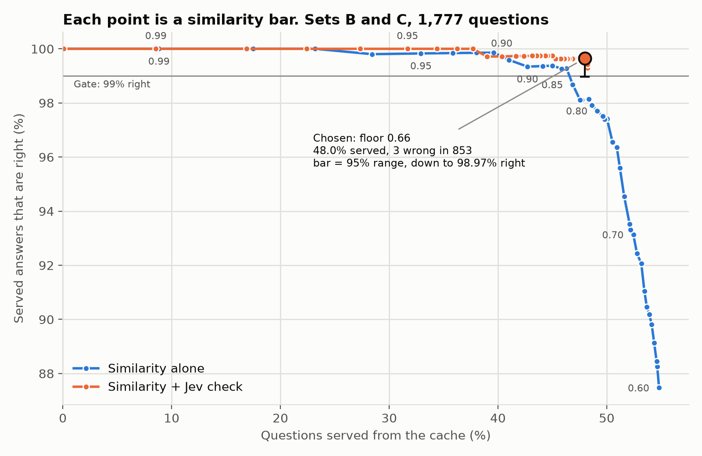
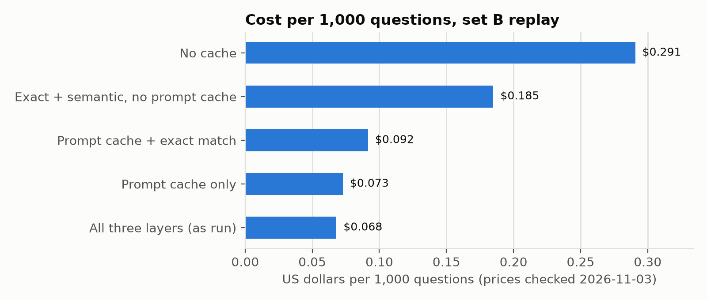
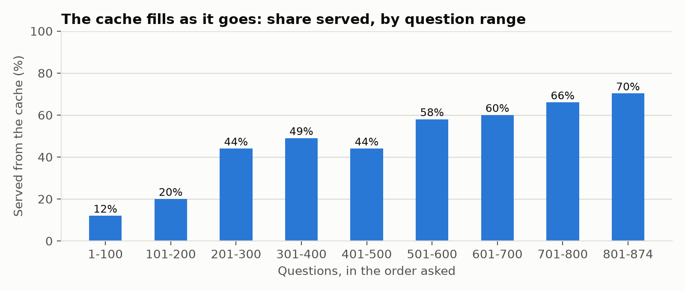
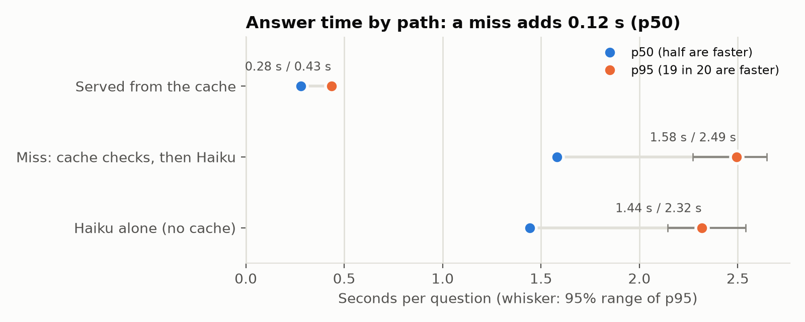

Warmstart: results
A cache for an online shop's support assistant: it reuses an earlier answer when a new question means the same
thing, and checks before reusing it. Every number here is read from the files in results/.
Wrong answers among those served, with their 95% range
The line is the gate: the top of the range must stay under 1%. "Corrected" re-marks the pairs that a hand check found mislabelled; it only ever removes errors, so read it as a lower bound.
Questions served from the cache, with their 95% range
How many it serves against how many are right
Lowering the similarity bar serves more questions. Alone, it also serves more wrong answers; with the Jev check, the share that is right stays flat.

(chosen: 0.66; below it, a stored question is never sent to the Jev check)
| Served | Wrong among served | Jev checks per 1,000 questions | |
|---|---|---|---|
| Similarity alone | |||
| Similarity + Jev check |
Cost

Warm-up

Answer time by path

Prices: AWS Price List API, AmazonBedrockFoundationModels, eu-west-1, published 2026-10-12: Claude Haiku 5.5, 'Standard' (regional) prices, which the eu. profile pays; global endpoints are 10% less. Cache writes are the 5-minute ones. AWS Price List API, AmazonBedrock, eu-west-1, published 2026-11-02: TitanEmbeddingsV2-Text input tokens, $0.000026004 per 1,000. typesafe.ai: '$42 per billion input tokens'; launch post 'Introducing System One models and Jev': 'Output tokens: FREE'.